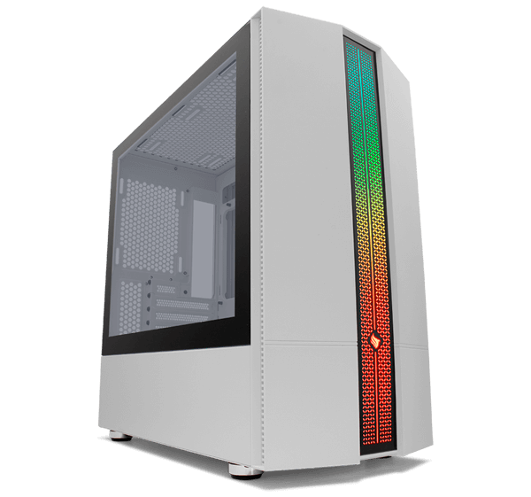

7º e último passo: Gabinete
Para garantir o perfeito funcionamento de todos esses componentes, é essencial uni-los em um gabinete cuidadosamente projetado. Esse gabinete não é apenas funcional, mas também representa a essência do seu computador. Por isso, escolha-o com atenção e carinho, pois ele será o verdadeiro cartão de visitas do Computador.
